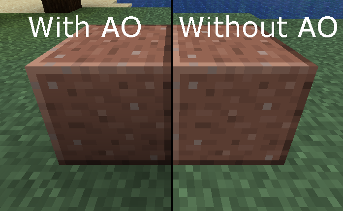

Face Data
In a vanilla "elements" model, additional data about an element's faces can be specified at either the element level or the face level. Faces which do not specify their own face data will fall back to the element's face data or a default if no face data is specified at the element level.
To use this extension for a generated item model, the model must be loaded through the forge:item_layers model loader due to the vanilla item model generator not being extended to read this additional data.
All values of the face data are optional.
Elements Model
In vanilla "elements" models, the face data applies to the face it is specified in or all faces of the element it is specified in which don't have their own face data.
!!!note
If forge_data is specified on a face, it will not inherit any parameters from the element-level forge_data declaration.
The additional data can be specified in the two ways shown in this example:
{
"elements": [
{
"forge_data": {
"color": "0xFFFF0000",
"block_light": 15,
"sky_light": 15,
"ambient_occlusion": false
},
"faces": {
"north": {
"forge_data": {
"color": "0xFFFF0000",
"block_light": 15,
"sky_light": 15,
"ambient_occlusion": false
},
// ...
},
// ...
},
// ...
}
]
}
Generated Item Model
In item models generated using the forge:item_layers loader, face data is specified for each texture layer and applies to all of the geometry (front/back facing quads and edge quads).
The forge_data field must be located at the top level of the model JSON, with each key-value pair associating a face data object to a layer index.
In the following example, layer 1 will be tinted red and glow at full brightness:
{
"textures": {
"layer0": "minecraft:item/stick",
"layer1": "minecraft:item/glowstone_dust"
},
"forge_data": {
"1": {
"color": "0xFFFF0000",
"block_light": 15,
"sky_light": 15,
"ambient_occlusion": false
}
}
}
Parameters
Color
Specifying a color value with the color entry will apply that color as a tint to the quads. Defaults to 0xFFFFFFFF (white, fully opaque). The color must be in the ARGB format packed into a 32-bit integer and can be specified as either a hexadecimal string ("0xAARRGGBB") or as a decimal integer literal (JSON does not support hexadecimal integer literals).
WARNING
The four color components are multiplied with the texture's pixels. Omitting the alpha component is equivalent to making it 0, which will make the geometry fully transparent.
This can be used as a replacement for tinting with BlockColor and ItemColor if the color values are constant.
Block and Sky Light
Specifying a block and/or sky light value with the block_light and sky_light entry respectively will override the respective light value of the quads. Both values default to 0. The values must be in the range 0-15 (inclusive) and are treated as a minimum value for the respective light type when the face is rendered, meaning that a higher in-world value of the respective light type will override the specified value.
The specified light values are purely client-side and affect neither the server's light level nor the brightness of surrounding blocks.
Ambient Occlusion
Specifying the ambient_occlusion flag will configure AO for the quads. Defaults to true. The behaviour of this flag is equivalent to the top-level ambientocclusion flag of the vanilla format.

Ambient occlusion enabled on the left and disabled on the right, demonstrated with the Smooth Lighting graphics setting
NOTE
If the top-level AO flag is set to false, specifying this flag as true on an element or face won't be able to override the top-level flag.
{ "ambientocclusion": false, "elements": [ { "forge_data": { "ambient_occlusion": true // Has no effect } } ] }